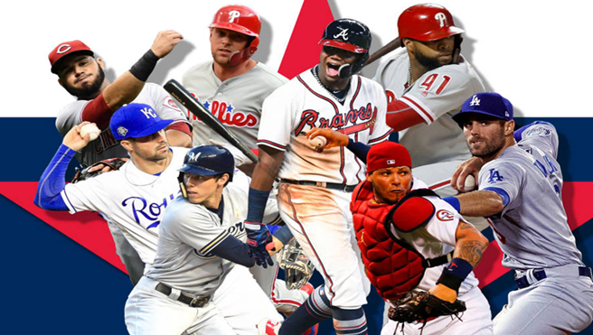
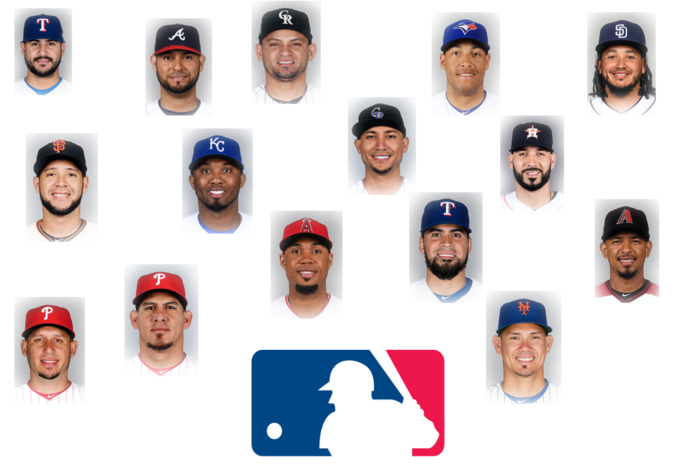

<div class="container_home">
  <!-- <div class="container cuadro_Central"> -->
    <div class="card-deck">

        <div class=" news0">
          </div>


        <div class="card news1">
            <a routerLink="news_ppal"></a>
        <div class="card-body">
            <a routerLink="news_ppal"><h5 class="card-title">¿VENEZUELA EN MLB?</h5></a>
          <p class="card-text">Revisa la actuación diaria de los jugadores VENEZOLANOS en Grandes Ligas.
            Visita la sección de BATEADORES, PITCHERS
            y hasta Noticias Diarias de nuestros héroes nacionales.<a routerLink="news_ppal" class="leer_mas"> Ver más </a>
        </div>
      </div>
      <div class="card news2">
          <a routerLink="daily"></a>
        <div class="card-body">
            <a routerLink="daily"><h5 class="card-title">VENEZOLANOS EN JAPON </h5></a>
          <p class="card-text">Junior Guerra, Milwaukee;
            Yusmeiro Petit, Oakland;
            Robinson Chirinos, Texas;
            Eugenio Suárez, Cincinnati
            y Ronald Acuña, Atlanta,
            son los venezolanos del All Star MLB en Japón 2018. <a routerLink="news" class="leer_mas"> Ver más </a>
          </p>
        </div>
      </div>
      <!-- <div class="card news3">
          <a routerLink="daily"></a>
        <div class="card-body">
            <a routerLink="daily"><h5 class="card-title">AGENTES LIBRES 18 -19</h5></a>
          <p class="card-text">Quince, es el número de venezolanos que tienen el estatus de Agentes Libres durante
            el receso de la temporada de beisbol en las Grandes Ligas 2018 - 2019. <a routerLink="news" class="leer_mas"> Ver más </a>
          </p>
        </div>
      </div> -->
    </div>
  <!-- </div> -->
<!-- </div> -->
